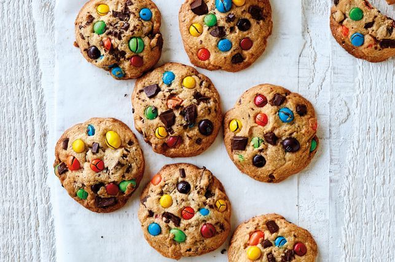

Jumbo M&M's cookies

Bring the fun into the kitchen these school holidays and get the kids to help bake our delicious, easy-to-make jumbo M&M's cookies!
Ingredients
- 185g butter, softened
- 1 cup (220g) brown sugar
- 1/2 cup (110g) caster sugar
- 1 free-range egg
- 1 free-range egg yolk
- 2 cups (300g) plain flour
- 1/2 tsp baking powder
- 345g pkt Mars M&M’s Peanut
- 1/2 cup (100g) Mars M&M’s
How to make
- Preheat oven to 180°C. Line 2 baking trays with baking paper.
- Use an electric mixer to beat butter and combined sugar in a bowl until pale and creamy. Beat in egg and egg yolk until well combined. Add flour and baking powder and stir to combine. Stir in peanut M&M’s, M&M’s and chocolate.
- Roll 1/4 cup portions of dough into balls. Place on the lined trays and gently flatten. Bake, in batches, swapping trays halfway through cooking, for 12-15 mins or until light golden. Set aside on the trays to cool.